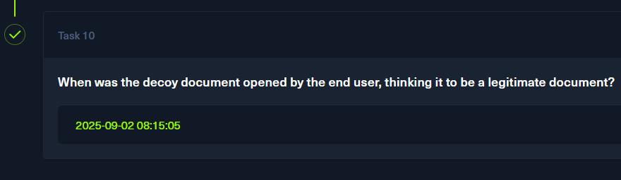

RomCom
Task 1
I can get an answer to this question without unzipping the archive. I'll search the web using 3 keywords from the question.
2025 RomCom WinRAR
This led me to an article describing CVE-2025-8088, a path traversal in WinRAR versions below 7.13.
https://www.secpod.com/blog/winrar-cve-2025-8088-romcoms-doorway-to-remote-code-execution/
The CVE number will be my answer to question 1.
Task 2
The answer to this question was already brought up while solving question 1, and it is path traversal
Task 3
Inside the challenge archive, there was a .vhdx disk image file. Since I am using a Windows machine, I can mount it by right-clicking and choosing mount
In the C directory, there is an $MFT file, and in the $Extend directory inside, there is the $J journal(UsnJournal).
With these two, files I can get a pretty thorough history of which files, where, and when they were created on the system.
I will use MFTECmd.exe to parse the journals.
MFTECmd.exe -f "E:\C\$Extend\$J" -m "E:\C\$MFT" --csv C:\Users\malware\Desktop\challs\RomCom\out
This dropped two files in the out directory. I opened the $MFT output and searched for .rar archives.
The name of this malicious archive is Pathology-Department-Research-Records.rar
Task 4
I'll open the $J output file. This is where timestamps related to file creation, modification, and more are present.
I used the archive's name to search through the $J entries.
The first highlighted entry is a FileCreate event tied to the archive, which occurred at 2025-09-02 08:13:50
This timestamp will be my answer to task 4.
Task 5
When a file is opened for the first time, Windows will create a .lnk shortcut file. This creation is captured in the UsnJournal as well.
Scrolling down, I quickly found the .lnk file related to the malicious archive.
This happened at 2025-09-02 08:14:04, and this timestamp will be my answer to question 5.
Task 6
I took the path of the malicious archive and searched for any recently created files in the same directory.
There are 3 files in total. Since they have the same creation timestamp, they came from the same extract action.
The decoy document is most definitely Genotyping_Results_B57_Positive.pdf, and it will be my answer to question 6.
Task 7
There was an executable listed in the $J output. It is the ApbxHelpex.exe file located under C:\Users\susan\AppData\Local
Since these 3 files have the exact same creation time, it means that they were extracted from the same archive. The fact that they are in different directories means that the path traversal exploit aws used successfully.
The full filepath will be C:\Users\susan\AppData\Local\ApbxHelper.exe, and it will be my answer to question 7.
Task 8
Second, and the last file extracted with the path traversal exploit is the Display Settings.lnk file.
The location where it was extracted is used to hold programs that will be executed when the user logs in. Most likely, the shortcut is pointing to the ApbxHelper.exe file.
C:\Users\Susan\AppData\Roaming\Microsoft\Windows\Start Menu\Programs\Startup\Display Settings.lnk will be my answer to question 8.
Task 9
I am looking for a Mitre technique associated with placing scripts/programs in the startup directory, so that they will be executed whenever the user logs in.
This is a great way for attackers to gain persistence on the machine. This particular technique falls under T1547(Boot or Logon Autostart Execution), and is listed as a subtechnique with a number of 009 (Shortcut Modification).
T1547.009 will be my answer to question 9.
Task 10
For the final question, I will move back to the $J output file. I'll search for entries related to the .lnk shortcut of the document.
The timestamp in this entry is 2025-09-02 08:15:05. This will be my answer to the final question.

Solved!